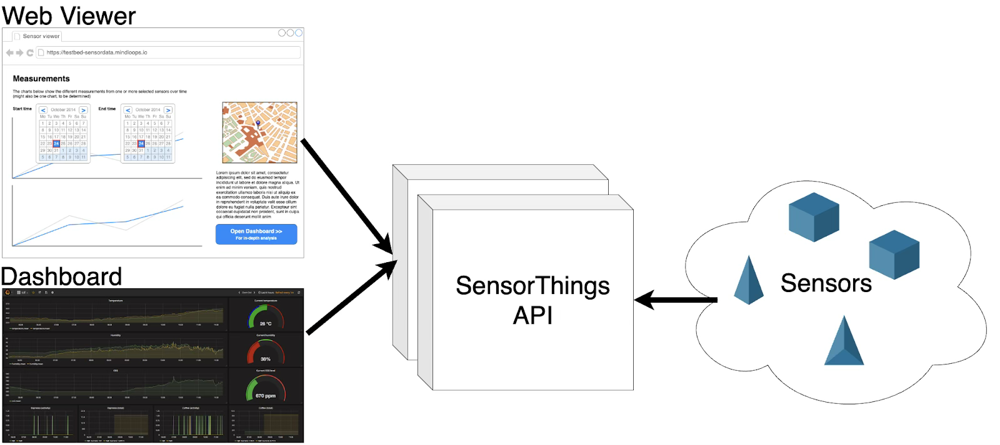
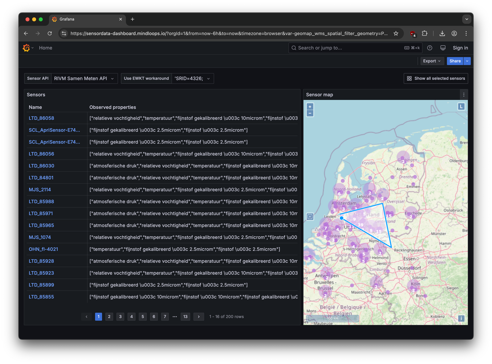
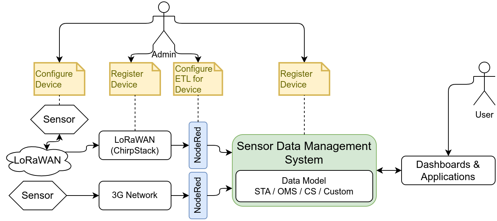

this is the 2025 Geonovum testbed sensordata report
Status of this document
This is a working draft that can be changed, removed or replaced by other documents at any time. It is not a stable document.
1. Research question 1
This section is non-normative.
2. Research question 2: Visualisation & Analysis
This section is non-normative.
2.1 Goal
An important aspect of working with sensor data is, of course, being able to get the data and load it into an
application for visualisation and analysis. This research question is about demonstrating that this works,
both in a web viewer and in a dashboard application (e.g. Grafana).
Demonstrate the following steps in both types of application:
The user searches for and finds different sensors that offer sensor data;
The users selects a subset of measurements based on several criteria. The following criteria must
be demonstrated as a minimum:
most recent measurement of one sensor;
all measurements at a certain location within a certain time period;
most recent measurement of a selection of sensors that are located within a bounding box.
The application loads the selected measurements;
The user can view and use the measurements within the application.
2.2 Use case
RIVM offers an existing SensorThings API (STA) endpoint (https://api-samenmeten.rivm.nl/v1.0) which can serve input for analysis and visualization demonstrations. Further, we are interested to investigate if this endpoint offers
sufficient data and metadata detail to support connections to third party dashboards, or if (small) tweaks are required in order to enable easier integration of the offered data with other tools.
2.3 About the researchers
This research is conducted by Mindloops BV. Mindloops is a boutique software consultancy specializing in software engineering. For nearly 10 years, Mindloops has proudly delivered solutions to clients such as the Dutch Police, the Dutch Railways (NS), The Netherlands’ Cadastre, Land Registry and Mapping Agency (Kadaster) and Dutch National Road Data Portal (NDW). Together with our clients and partners, Mindloops is committed to making a positive impact on society. Mindloops has a proven track record in building and running high-quality, mission-critical, bespoke software designed to last and evolve for decades. These data-intensive systems often require extensive integration with other systems, as well as data visualization.
2.4 Design and approach
The viewers communicate with a SensorThings API and allow users to select sensors and view measurements. As a data source we used the RIVM SamenMeten SensorThings API. To prove that our viewer is able to handle SensorThings API in a generic way we’ve also added the Fraunhofer Airquality SensorThings API (as a bonus).

We’ve applied a risk-driven approach in which we tackled the most complex things early on. This maximises the desired outcome within the available time. Also we used an iterative and agile approach with short feedback cycles to validate our results, which aligned with the bi-weekly meetings with GeoNovum.
2.5 Results
We've implemented the requested features in a dashboard application and web viewer. Both are accessible on a publicly accessible URL, which will be available for demonstration purposes until 31-10-2025.
All source code needed to run both solutions in a local environment is delivered as open source under MIT license.
See the README in each repository for details.
Select an area on the map and list sensor data.

Show measurements of one or more sensors
Switch API source to use. Note: for the RIVM API the 'Use EWKT workaround' should be set on 'SRID=4326', while for the Fraunhofer API it should be empty.
2.5.2 Demo of Web viewer
Selecting a specific sensor
Select an area on the map and list sensor data.
Show measurements of one or more sensors
2.6 Findings
2.6.1 Overall
The SensorThings API (STA) provides a well-structured and easy to use API for consuming sensor data. There are several data structures in the API,
that are well interconnected and provide useful entries into a suite of sensor data. It is possible to query data in several useful ways, e.g.
based on observed properties, geo location and/or time range. Additionally, it is also possible to combine API results dynamically as part of the
OData standard that the SensorThings API is based on. This makes it possible to combine data in a single API call, even though this is not
predefined in the API specification. That is very useful, especially for more standardized tools like Grafana,
that need all relevant data in a single API response to work properly.
We experienced no major shortcomings in the SensorThings API standard. We identified the following (minor) improvements:
No standard for observed properties
Currently every STA defines its own observed properties. For example temperature is (re)defined in every single STA. There are no standard observed properties. The STA specification does allow observed properties to point to definitions but every STA implementation is free to pick their own definitions. This makes it harder for example to convert from one unit of measurement to another in a viewer.
No support for multiple languages
Descriptions for sensors and measured properties are not available in multiple languages by the SensorThings API. This seems missing in the specification. This may make it harder to use sensor data, especially when descriptions are provided in different languages depending on sensor location.
2.6.2 RIVM API
We worked with the RIVM Samenmeten API as the primary datasource for this use case. The implementation is based on 1.0 of the specification. RIVM uses the open source GOST server which is currently not actively maintained and has several known issues. RIVM is aware of these issues and is planning to migrate to a different solution in the future.
We encountered the following issues during our research:
The geospatial search filter did not work with a standard WKT string. It did work with an EWKT string, which contains an SRID and is specific to the Postgres database as used by RIVM. This means geospatial search was not interoperable with other APIs like Fraunhofer’s.
The paging feature of the API is activated when more than 200 results are returned. However, paging did not always work properly, meaning no results were returned or the wrong results, because the "top" and "skip" values were not processed correctly. In addition, when using the "$expand" feature, paging was often not possible at all even though results were still limited to 200. This makes it impossible to process all available data. The latter is a known issue in GOST.
The RIVM API does not allow Cross-Origin Resource Sharing (CORS). This makes it impossible to build a web-based viewer that communicates directly with the API (using XHR requests). Since the browser used by an end-user will enforce CORS by default. As a workaround we proxied the requests of our web-based viewer through our backend service. To be clear: this issue only applies to client-side web-applications.
2.6.3 Dashboard application
We’ve selected Grafana to implement the dashboard application since it’s the de facto application for complex time series data and well-suited to display sensor data. On the other hand Grafana is a generic dashboarding and visualisation tool, and is not specifically built for SensorThings API. As a consequence we needed to organise API calls and responses in such a way that it fits the Grafana way of working. This would also apply to other off-the-shelf visualisation tools like Kibana, Apache Superset or BI tools like PowerBI, Tableau, etc.
Our research revealed the following findings:
We started out with the FROST SensorThings Datasource plugin. This data source was easy to use but limited in its capabilities. It is only capable of displaying observations. We switched to the more generic Infinity Data Source instead. This had the advantage of also being able to fetch other SensorThings endpoints like Locations, Things and ObservedProperties. We needed data from these endpoints to display maps and tables on our dashboard to allow the user to select one or more sensors. The Infinity data source is also more advanced compared to the FROST data source as it supports other features of Grafana like alerting. Alerting is supported since the Infinity data source is a so-called Grafana backend plugin.
To meet the requirement for the interactive map, we were unable to use the built-in Geomap component of Grafana since it doesn’t allow user interaction. In Grafana,
it is more common to predefine a geographic visualisation and set-up different dashboards for different locations or areas (e.g. Netherlands/Germany). So it isn’t a common use case to let users draw a bounding box in Grafana. As an alternative we used the GeoMap Panel WMS plugin. Despite its name this geomap component isn't limited to WMS datasources, it supports the same datasources as the built-in Grafana geomap component like OpenStreetMap. The GeoMap Panel component worked perfectly and allows the user to draw a polygon and thereby select one or more sensors (things) on a map.
2.6.4 Bespoke web viewer
A bespoke web app allows for more freedom in customization and presenting the data visually. All components can be tailored to the SensorThings API use case. The downside is that this may require more technical expertise, and no customisation is possible by end-users.
Our research revealed the following findings:
On request of GeoNovum we used AI code generation tools to help assist with the generation of several parts of the viewer. The AI tools we used (Anthropic, OpenAI, Google) all understood SensorThings API semantics in general and were able to provide initial implementations for them. It did require significant tuning, due to API implementation details sometimes missing or behaving differently, and AI tools not always properly providing solutions that had the right semantics. In summary, at the moment AI tools are useful for jumpstarting specific parts of the viewer, such as a table or map component, but are unlikely to provide meaningful results when tasked with creating an entire viewer from a single prompt. Still AI coding tools are very helpful and promising.
As mentioned in the RIVM paragraph due to the CORS limitation in RIVM API, we couldn’t connect the web viewer directly to the RIVM API. Instead, we used
an intermediate proxy on our own backend to work around this limitation.
2.7 Conclusion
All research goals were successfully achieved for both the dashboard application and the bespoke web viewer. The Sensordata API allows for a flexible way to interconnect sensor data with
different visualisation and analytics technologies. There are some caveats, e.g. issues in API implementations, and potentially vague or missing metadata in the generic API, that makes it necessary to customize or tune the viewer based on details outside the SensorThings API.
2.8 Recommendations
2.8.1 RIVM API
Upgrade the SensorThings server to a more actively maintained implementation. This would likely resolve all encountered issues. We’ve discussed this finding with RIVM, and RIVM is already planning to upgrade the server.
Enable CORS to allow web viewers to interact directly with the API without needing a backend. This involves including the Access-Control-Allow-Origin: * HTTP header in every response.
2.8.2 SensorThings standard
Investigate ways to standardize observed properties and/or support conversions between units of measurement. For example, allow the user to specify the desired unit of temperature as Fahrenheit in a query parameter and let the API take care of Celsius to Fahrenheit conversion.
Investigate ways to allow for internationalization (i18n). This can be achieved by supporting the Accept-Language HTTP request header in line with OGC API Common.
3. Research question 3: Device Registration
This section is non-normative.
3.1 Goal
The OGC SensorThings API is a very convenient API for accessing sensor data.
But to access sensor data, the data has to be added to a service first.
Most sensors no not talk SensorThings, but some other standard, like LoRa-WAN, NB-IoT or 5G.
What needs to happen to have a sensor be registered in a SensorThings service, and have the data from the sensor appear there too, is device registration, or onboarding.
This research topic explores the issue of device registration.
Device registration, and following that, device management, is an ongoing research topic.
Not just in the context of the Internet of Things, but everywhere where sensors are deployed and managed.
The complexity stems from the fact that there are very many different sensors and sensor types, used in very many different use cases, feeding their data into very many different sensor data management systems over many different communication protocols.
The manufacturer of a Sensor system can’t know in advance the use cases the sensor will be used for, or the sensor data management systems it will need to feed data to.
When deploying a new sensor for a given use case, communicating over an existing communication infrastructure, sending data to an existing sensor data management system, information from four different sources needs to be combined:
The sensor hardware, such as:
Sensor identification
Measured parameters
Communication Infrastructure, such as:
Authentication and Authorisation
Addresses of brokers or gateways
Sensor data management system, such as:
Authentication and Authorisation
API endpoints
Use case, such as:
Feature the sensor observes
Location of the sensor
Responsible party
The initial configuration of sensor devices is manufacturer specific and needs to be done directly on the device
For instance, many manufacturers of LoRaWAN sensor devices provide a smartphone app that uses Near-Field-Communication (NFC) to directly change the configuration of their devices.
Next to the initial configuration of the device itself, the device also has to be registered on the communication network.
On the case of LoRa, this is often the global network “The Things Network”, but many organisations have their own local LoRa instance using the “Chirpstack” software implementation.
Once the initial configuration is completed, and the device is connected to a LoRa network, the configuration of many devices can also be changed using Over-The-Air updates.
The sensor also has to be registered in the sensor data management system of the organisation that deploys the sensor, so that the data from the sensor can be used for the purpose it was deployed for.
There are many different systems for this, many custom-built for their use case, some based on standards such as O&M, OMS or the SensorThings API.
Because of the enormous diversity in each of the layers involved, the concept of connectors is used to transfer data between the communication infrastructure and the information management system.
A Connector is a piece of software with Extract, Transform, Load (ETL) functionality, that takes data from a source system, transforms the data into the format of the target system, and then loads the data into the target system.
A common piece of software used for this purpose is NodeRed, that features a browser-based, drag-and-drop interface for creating ETL flows.
One problem with this architecture is directly clear from figure 1: The data from a single sensor has to be managed and kept synchronised over multiple systems.

Figure 1Generic IoI Architecture with many different Admin interfaces
Taking a typical LoRa device, using NodeRed as ETL stack, the process looks something like this:
Device: Configure the device by setting the identifiers and secrets used to join the LoRa network and configure the intervals in which measurements are made.
LoRa Network: Register the device
Create a device object in the LoRa network stack with the identifiers and secrets from the previous step.
Set up a low-level decoder to decode the payload of the sensor into a generic JSON object.
If multiple devices of the same type are used, this generally only needs to be done once.
SensorThings Service: Create entities for managing the sensor data
Create a Thing with a Location
For each Sensor on the device, create an ObservedProperty instance if a suitable one is not already present.
For each Sensor on the device, create a Sensor instance if a suitable one is not already present.
For each Sensor on the device, create a Datastream, linked to the Thing, a Sensor and an ObservedProperty.
NodeRed: Create the workflow that can decode the generic JSON object and insert each value into the correct Datastream for the device.
Device Registration is also only the first step in the long process of device management.
Devices can break, be moved around, and be decommissioned.
Battery lifetime needs to be tracked to ensure they are exchanged in time and sensors need to be monitored to ensure they still work as expected.
It is quite likely that the admin in the diagram will start using a spreadsheet to keep track of his sensors, thus adding a fifth location that contains data for a sensor that needs to be kept in sync.
3.4 OpenCitySense
To make the complexities of sensor management more manageable, Fraunhofer IOSB started an internal research project to design the concept for a sensor management system, based on the OGC SensorThings API, and create an implementation of this system.
Since the SensorThings API version 1.1 is extendible by design, and already comes with several extensions, the architecture can be greatly simplified by using the SensorThings API service as the central data store for all sensor related data (figure 3).
This means that all components communicate through a single service, reducing the number of interconnects between components and reducing the spread of primary information across components.
The standard tasking extension can be used to coordinate management actions between components, such as signalling to a connector that a sensor needs to be on-boarded, that a configuration needs to be changed, or that a sensor needs to be off-boarded.
The connector concept can then be extended to not just be a one-way ETL process, but to take an active role in the sensor registration process on the LoRaWAN stack.
It can receive information about new or updated sensors from the SensorThings service, and automatically take all required registration actions in the communication infrastructure.
Besides greatly simplifying the architecture, a second major advantage to using the SensorThing API service for all data storage is that it offers a consistent, powerful API for managing relational data.
This makes all data relevant for managing sensors and their data available in a unified, consistent way, and management tools or other clients do not need to implement multiple APIs.
While all publicly relevant sensor data and metadata can be stored in the core data model of the SensorThings API, internal management data can be stored in a custom data model extension.
Since this does not alter the core data model of the SensorThings API, clients implementing only the Sensing part will not be affected by this data model extension.
Sensor configuration parameters are modelled using the SWE Common Data Model Encoding Standard, and translated by the connector into a form that the sensor understands.
This means that regardless of sensor brand or type, the management GUI can offer a consistent interface for changing sensor settings.
OpenCitySense consists of:
A data model extension for FROST-Server.
A GUI for managing sensors.
A generic framework for developing connectors.
A connector for connecting LoRaWAN devices over Chirpstack.
A connector for connecting LoRaWAN devices over TTN/TTI.
3.4.1 Data Model
To allow the representation of device management information, a data model extension has been designed for the data models of the SensorThings API and the tasking extension.
The extended data mode is depicted in the following image.
Connectors and Devices are modelled as Things.
To make it easier to distinguish between different types of Things, a "type" field has been added to the Thing entity type that indicates the type of the thing.
Things of type "Connector" are linked to the Things of the devices they manage, through the ControlledDevices <-> ControllingConnector relation.
This makes it easy to find all the devices controlled by a certain connector, and to find the connector controlling a certain device.
Each Thing can have a DeviceModel, describing the capabilities of the Device or Connector.
A DeviceModel contains the schema for the Configurations of devices of this model, and can link to a Configuration that is the template or default configuration of devices of this model.
DeviceModels can link to a Decoder that can be used to decode and encode data coming from and sent to devices of this model.
DeviceModels link to Sensors that describe the Sensors that a device of the model has.
In turn, Sensors link to the ObservedProperties that a Sensor of this type observes.
Using these two links, a Connector knows which Datastreams to create and which Sensor and ObservedProperty to link, when onboarding a Device.
DeviceModels link to the DeviceModels of the Connectors that they are compatible with.
This allows a user interface to find the DeviceModels that work on a chosen Connector, and allows the Connector to specify additional configuration options it requires on a Device and a DeviceModel.
Configurations describe how a device can be, was or is configured.
The schema for the config is stored in the DeviceModel of the device.
The status field of a configuration indicates the current status of a sensor (Created, Active, Inactive, Removed) or if the Configuration is a Template.
Configurations have a time field that indicates when this configuration became active.
If a device has multiple configurations there must be only one configuration with status "Active".
The other configurations are historical Configurations or templates.
To allow the secure storage of passwords or API keys, the DeviceSecret class was added to the data model.
The secrets can be secured, both by only giving certain users read-access to these device secrets, and by encrypting the values of the device secrets.
To allow Encryption, a connector has a public/private key pair.
The private key of a connector is not stored in the SensorThings data model, but directly passed to the connector, usually using an environment variable.
The public key of the connector is available in the SensorThings data model and can be used by clients to encrypt passwords before storing them in a DeviceSecret entity.
This way only the connector can decrypt these secrets.
3.4.2 Onboarding Workflow
From the point of view of the User Interface the workflow for onboarding a sensor is as follows:
Assuming a suitable DeviceModel already exists for the device to be onboarded, the user interface only needs to create a Thing for the device and then create a Task for the connector to onboard the device.
Most of the work is done by the Connector, as can be seen in the workflow focusing on what the Connector does after the onboarding Task is created:
Note that the Decoder contains two large javascript text blobs that are used by the Connector to decode the binary payload of the Device.
The device sends this payload Base64 encoded, for example AQDVAi8EAAEFAAYB6AcOHw==.
This is first decoded to a JSON object, by the decoder provided by the manufacturer:
From the data in this JSON object Observations are generated, using the time in the LoRa message as phenomenonTime.
Because the names used in this JSON object are alse vendor specific, a second mapper is used to find the correct Datastream for each element.
These Observations are then added to the corresponding Datastream of the device.
The demo service is read-only.
For a demonstration of the onboarding process, please contact us by email at frost@iosb.fraunhofer.de.
3.4.4 Future
OpenCitySense is a currently running internal research project of Fraunhofer IOSB, with the first demonstrators operational.
The architecture and data model will be open and free for use, but which parts of the software implementation will be open source has not been decided yet.
As well as sections marked as non-normative, all authoring guidelines, diagrams, examples, and notes in this specification are non-normative. Everything else in this specification is normative.